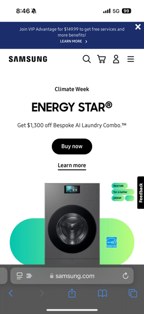

Visual Hierarchy
CrumblVisual hierarchy refers to the arrangement or presentation of elements in a way that implies importance. On Crumbl's site, they use larger, bold fonts for headlines and key calls to action, drawing the user's attention immediately to these elements.
Hick's Law
AppleHick's Law states that the more choices a user has, the longer it will take them to make a decision. Apple's website limits the number of navigation options in the menu, reducing complexity for the user.
Fitt's Law
Samsung Fitt's Law suggests that the time to find or click a button is a function of the distance and size of the target. On Samsung's website, large, easily clickable buttons are placed within easy reach on the screen, improving the user’s ability to interact quickly.